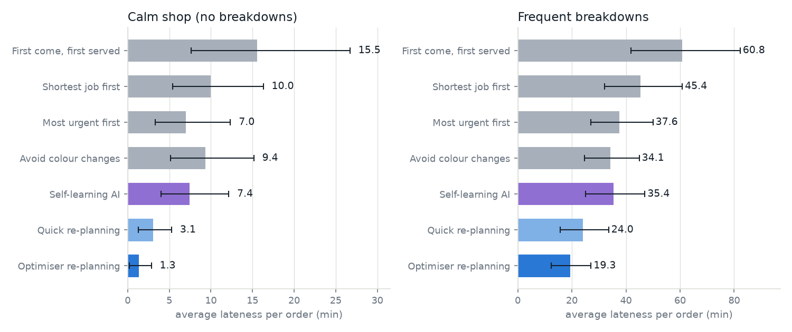

Factory scheduling, explained from zero · a side project
Which job should the machine do next?
Picture a small workshop. Orders come in all day, each needs several steps on different
machines, and the machines sometimes break down. Every few minutes, someone (or something) has to answer a
question that sounds simple: which order does this machine work on next? A good answer
delivers orders on time; a poor one makes customers wait. This page explains the problem from scratch, with
a small example you can follow by hand, and then compares three ways of answering it on a simulated
workshop: rules of thumb, an optimiser that re-plans whenever something
happens, and a self-learning AI.
Elie Rouphael · No background in scheduling needed · The code is open source (Python)
The workshop in this study is imaginary but realistic. It is a job shop: a shop where each order
follows its own route through the machines, as in a mechanical workshop or a print shop, rather than a single
assembly line.
The simulated workshop. Five machines, a load station where orders arrive, and two
automated carts that carry the parts. Each order visits four machines in turn; for most steps, two or three
machines can do the work, at different speeds. Machines break down at random and are repaired after 10 to
30 minutes.
A few words, used throughout the page:
Order (or job)
One thing to make, for one customer. It arrives at a random time and has a due time, when the customer expects it.
Step (operation)
Each order needs 4 steps, in a fixed order, each on a machine. Most steps can be done on 2 or 3 different machines: that is the "flexible" in flexible job shop.
Product family
Orders come in 4 families (think: 4 colours of paint, or 4 sizes of part).
Changeover
When a machine switches from one family to another, it must be re-set (cleaned, re-tooled): 3 to 10 minutes during which it produces nothing. Two orders of the same family in a row need no changeover.
Lateness
How long after its due time an order is finished, or 0 if it is on time. The goal is to keep the average lateness per order as small as possible. (Schedulers call this "tardiness".)
2 · The decision, on a single machine
Before the full workshop, take one machine, because the whole difficulty is already there. The machine
paints parts. It is set up for blue, and switching colour takes
10 minutes. Four orders are waiting, in this order of arrival:
Order
Colour
Painting time
Due at minute
A
blue
20 min
30
B
red
10 min
25
C
blue
15 min
70
D
red
25 min
60
In which order should the machine paint them? A real shop usually answers with a rule of thumb,
applied every time the machine becomes free. Four classic ones, each with its usual abbreviation:
First come, first served (FIFO): the order that arrived first.
Shortest job first (SPT): the quickest order, to clear the queue fast.
Most urgent first (EDD, "earliest due date"): the order due soonest.
Avoid colour changes (SST, "shortest setup time"): an order of the colour already loaded, if there is one.
Here is what each rule does with the four orders, and, at the bottom, the best possible order, found by
simply trying all 24 sequences:
The same four orders, five ways. Each row is the machine's timeline. Striped grey blocks
are colour changes, when the machine paints nothing. Red notes show how late each late order is.
Three things to notice:
"Most urgent first" is the worst here, although it sounds the most sensible. By chasing due dates
it switches colour four times and wastes 40 minutes on changeovers, which makes everything later.
"Avoid colour changes" is the best rule, but order B, due at minute 25, is not finished until minute 55.
The best plan beats every rule (40 minutes late in total, against 50 for the best rule). It does
something no rule can: it looks ahead, and balances urgency against changeovers over the whole sequence.
A rule of thumb looks at one thing (arrival, length, urgency or colour) and one decision at
a time. A plan looks at everything together. With 4 orders we can try all 24 sequences by hand; the question of
this project is what happens in a real-sized shop, where that is impossible.
3 · From one machine to a whole workshop
The full workshop is the same decision, made much harder in four ways:
Too many possibilities. Ten orders on one machine can be sequenced in 3.6 million ways; twenty, in
more than 1018. And here there are five machines, and for most steps a choice of machine too.
Everything is connected. An order cannot start its third step before finishing its second, on
another machine, and being carried over by a cart.
New orders keep arriving, at random: about one every 21 minutes, 60 in a simulated day.
Machines break down. In the "frequent breakdowns" setting, each machine is down about 14 % of the
time. A plan made at 9:00 can be wrong by 9:10.
So there are two questions at every moment: which machine should each order go to next, and
in which order should each machine work through its queue.
4 · Three ways to decide
1. Rules of thumb
Whenever a machine is free, apply one of the four rules above to its queue. Send each order to the machine
expected to finish it soonest.
+ Instant, simple, what most shops do.
− Looks at one machine and one decision at a time.
2. An optimiser that re-plans
Every time something happens (a new order, a breakdown, a repair), build a complete new plan for the whole
shop with an optimisation solver, and follow it until the next event.
+ Looks ahead and sees the whole shop.
− Needs a model of the shop, and about 1.6 s of computing per re-plan.
3. A self-learning AI
An agent that learns, by trial and error over thousands of simulated days, which of the four rules to use
in each situation.
+ Fast once trained; adapts the rule to the situation.
− Can only be as good as what it manages to learn.
How the optimiser works
An optimiser is a program that, given the rules a plan must respect and a goal, searches for
the best plan. Here the rules are the shop's physical constraints, written once:
each step of an order runs on exactly one of the machines able to do it;
a machine does one thing at a time, and a change of family costs a changeover;
an order's steps happen in sequence, with time to carry it between machines;
a broken machine is unavailable until its expected repair.
The goal: as little lateness as possible (and, as a tie-breaker, orders finished early rather than late).
The solver used is CP-SAT, a free constraint programming solver from Google's OR-Tools. It
does not try every plan, which would take forever: it reasons about the rules to cut away whole families of
bad plans at once, and it can often prove that no better plan exists (it did for about half of the
plans here).
Re-plan, follow, re-plan. In a simulated day with breakdowns this happens about 160
times. The plan never sees the future: it does not know when the next order will come or the next machine will
fail. It just keeps its plan up to date.
To find out whether the solver itself matters, or just the habit of re-planning, there is a fourth,
in-between method: quick re-planning. Same loop, but each new plan is built by a simple quick procedure
instead of the solver.
How the self-learning AI works
The AI is a reinforcement learning agent (a "DQN", deep Q-network, the method a program famously used
to learn Atari video games from the screen alone). Each time a machine is free and several orders wait, it
looks at the situation (how urgent the waiting orders are, how long they take, which colour is loaded, how many
machines are down…) and picks one of the four rules. After each choice it receives a score: minus the extra
lateness that choice has committed the shop to. A small neural network learns, over 1,500 simulated days, to
estimate which choice leads to the least lateness in each situation. The method is explained step by step in my tutorial on
teaching a network to balance a pole.
5 · A fair comparison
Nobody can test scheduling methods on a real factory for weeks, so the workshop is a computer
simulation (written with SimPy): a program that plays out the shop minute by minute, moves the carts,
breaks the machines, and asks the method under test what to do whenever a decision is needed. Such a
simulation is sometimes called a digital twin of the shop.
Same days for everyone. 20 test days, each with its own random orders and breakdowns, and every
method plays exactly the same 20 days. So methods can be compared day by day, not just on average.
Two settings. A calm shop with no breakdowns, and a shop with frequent breakdowns.
Nothing tuned on the test. All settings, and the AI's training, used other simulated days; the 20
test days were played once, at the end.
Every schedule is checked. A simulation can have bugs that make a method look better than it is. So
an independent program re-checks every schedule actually carried out, from scratch: no machine doing two
things at once, every changeover respected, no work on a broken machine, every part carried by a cart before
it is worked on. All 480 schedules passed.
6 · Results
Average lateness per order, over the 20 test days. The thin black lines show the
uncertainty (95 % confidence): they are wide because some days are much harder than others.

Average lateness per order. Grey: the four rules of thumb; purple: the self-learning AI;
light blue: quick re-planning; dark blue: the optimiser re-planning at every event.
What this says, in plain words
Re-planning with the optimiser wins, every single day. With frequent breakdowns, orders are on
average 19 minutes late instead of 34 with the best rule of thumb: 43 % less lateness. It was better
than the best rule on all 20 test days, in both settings. In the calm shop, lateness almost disappears (1.3
minutes instead of 7.0).
The gain comes from changeovers, exactly as in the small example. With the rules, machines spend
between 820 and 1,090 minutes a day changing over; with re-planning, about 635. A plan groups orders of the
same family on a machine, which a rule looking at one queue at a time cannot do.
Most of the gain comes from re-planning itself. Quick re-planning, without the solver, already gets
24 minutes. The solver adds a further 5 minutes, a real but smaller improvement, at the price of 1.6 s of
computing per plan.
The self-learning AI does not beat the rules. At 35 minutes it is as good as the best rule, not
better. It learned to stay close to whichever rule works best in each setting, which is not nothing, but it
never discovered anything the rules miss. With more information, or freedom to plan rather than to pick a
rule, it might; this experiment does not show it.
The full numbers, with uncertainty and day-by-day comparisons
Frequent breakdowns
avg lateness (min)
worst order (min late)
changeovers (min/day)
computing per day
First come, first served
60.8 [41.9, 82.2]
216
1091
1 ms
Shortest job first
45.4 [32.0, 60.8]
235
1036
2 ms
Most urgent first
37.6 [27.1, 50.0]
155
1014
2 ms
Avoid colour changes (best rule)
34.1 [24.8, 44.9]
212
820
1 ms
Self-learning AI
35.4 [25.1, 47.0]
183
904
20 ms
Quick re-planning
24.0 [15.8, 33.6]
131
618
81 ms
Optimiser re-planning
19.3 [12.3, 27.1]
116
633
256 s
Day-by-day difference in avg lateness (min)
calm shop
frequent breakdowns
Optimiser vs best rule
−5.7 [−9.6, −2.9], better on 20 of 20 days
−14.8 [−18.4, −11.7], better on 20 of 20
Quick re-planning vs best rule
−3.9 [−7.5, −1.4], 18 of 20
−10.1 [−15.0, −5.3], 17 of 20
Optimiser vs quick re-planning
−1.7 [−2.7, −0.9], 19 of 20
−4.7 [−8.9, −1.3], 17 of 20
Self-learning AI vs best rule
+0.4 [−0.7, +1.5], 6 of 20
+1.3 [−2.1, +5.1], 11 of 20
Brackets are 95 % bootstrap confidence intervals over the 20 days. The best rule is "most urgent first" in
the calm shop and "avoid colour changes" with breakdowns; it was chosen after seeing the test, which, if
anything, favours the rules.
What a real plan looks like. The first 8 hours of test day 0, with breakdowns, under the
optimiser. Each row is a machine (and, at the bottom, the two carts); each coloured block is one step of one
order, coloured by family, with the order's number on it. Grey: changeovers. Hatched red: breakdowns. Notice
the runs of the same colour on a machine: that is the grouping that saves changeovers.
7 · What this does not show
It is a simulation, with invented data: one workshop, one level of busyness, 60 orders a day. It says
nothing about any real factory, and is connected to no real machine.
The optimiser's model is simplified. It treats the carts as a fixed travel time instead of planning
them, and it does not know the future. Its 1.6 s of thinking time is not counted in the simulated clock.
Breakdowns are convenient: the controllers know the average repair time, and interrupted work
resumes without loss.
Stronger rules exist. Rules that combine urgency and changeovers (such as ATCS) might close part of the
gap; they are a natural next comparison.
One AI design. The agent only picks among four rules at one machine. A different design might do
better; this one did not.
8 · For the technically curious
The workshop data
5 machines, one station each, plus a load station. 4 families of 4 operations; each operation can run on
1 to 3 machines with machine-dependent times of 6 to 30 min. Sequence-dependent changeovers of 3 to 10 min,
asymmetric, none within a family; a changeover starts once the machine is free and the job is there. 2 AGVs,
one job at a time, 2 to 3 min between stations, requests served first come first served by the nearest idle
AGV. 60 jobs per run, Poisson arrivals (mean 20.8 min, machines loaded at 60 % before changeovers). Due date =
arrival + k × shortest total processing time, k uniform in [2, 4]. Breakdowns: exponential time between
failures (mean 120 min per machine at the "frequent" level), repair uniform in [10, 30] min. Integer minutes.
The CP-SAT model
One start and one end per remaining operation, one optional interval per eligible machine, exactly one present (routing).
NoOverlap per machine, and a circuit constraint over its operations whose arcs mean "b directly follows a" and enforce start_b ≥ max(end_a, arrival_b) + setup(family_a, family_b).
Precedence inside a job with a transport lag (travel + 2 min, the median wait for an AGV measured in simulation) that depends on the two machines chosen.
Objective: 10 × total tardiness + total completion time, over the 25 most urgent jobs present.
Warm start from greedy schedules and the previous plan, passed as a complete hint; 0.2 deterministic-time units per solve with 8 interleaved workers, so a run reproduces exactly; about 1.6 s per replan.
Rolling horizon: re-solved at every arrival, breakdown and repair; between events each machine follows the planned order.
The DQN agent
Decision point: a machine is free and at least two jobs wait. Action: FIFO, SPT, EDD or SST. State: 29
features (for the job each rule would pick: processing time, changeover, slack, remaining operations, waiting
time; queue and shop statistics: queue length, slack statistics, jobs in the shop, share of late jobs, machines
down, pending transport requests). Reward: minus the increase in the tardiness the shop is already committed
to, so a run's rewards sum to minus its total tardiness. Double DQN, replay buffer, soft target update, Huber
loss; 5 training seeds of 1,500 episodes, the one with the best validation score kept (the other four are
reported in the repository and give the same picture).
The test protocol and the checker
Test seeds 0–19, run once after every choice was fixed on validation seeds 5000–5009 and training seeds from
100000. Paired comparison seed by seed, 95 % percentile bootstrap (10,000 resamples). The checker never reads
the simulator's state or a solver model: from the workshop data, the scenario and the executed log it re-derives
every constraint (each operation once, on an eligible machine, for its full time; no overlap, no work during
downtime; exact changeovers; continuous AGV paths at layout speeds; jobs carried between operations). The test
suite (64 tests) injects each kind of violation into valid logs, and compares CP-SAT optima with brute force on
snapshots small enough to enumerate.
Run it yourself
Everything is open source: the simulation, the three methods, the checker, the tests and the trained AI.
python -m venv .venv
.venv/Scripts/python -m pip install -r requirements.txt # Linux/macOS: .venv/bin/python
.venv/Scripts/python -m pytest # 64 tests, about 1 min
.venv/Scripts/python scripts/evaluate.py # all results, about 40 min